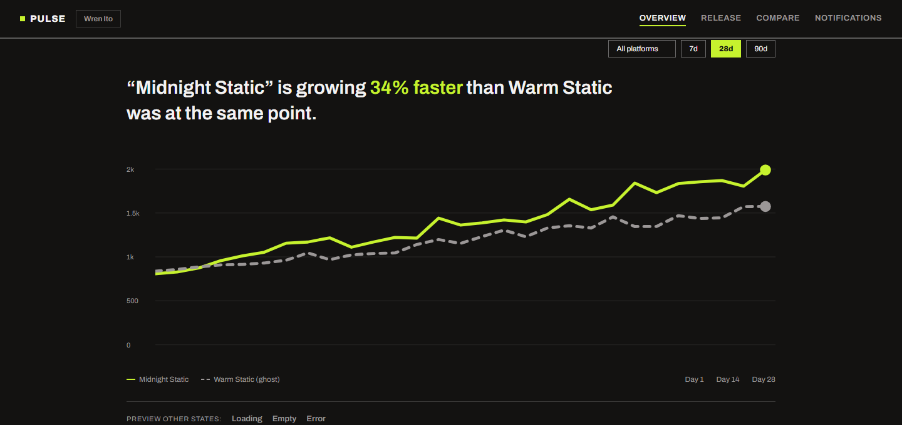
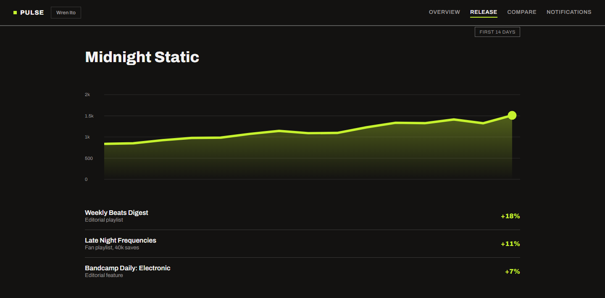
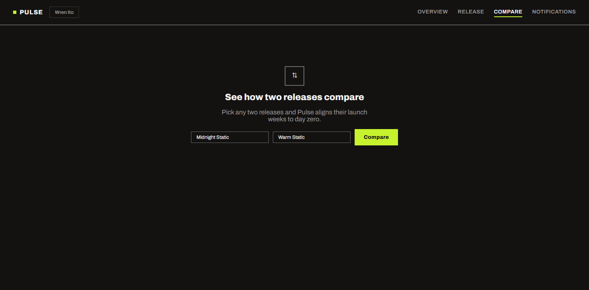
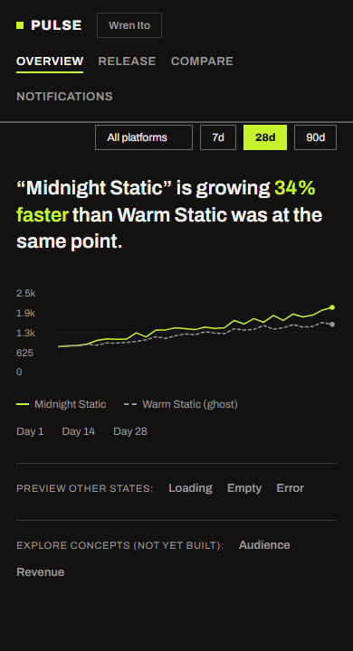

The data exists. The picture does not.
Independent producers release music across Spotify, YouTube Music and Bandcamp, but their data lives in three separate apps with three separate logins, three different chart styles and three definitions of what counts as a listen. Every platform tells a partial story, and none of them talk to each other.
In practice this means the questions that actually matter go unanswered: is my latest release gaining traction, where are my listeners, and should I change strategy? I set out to design one place where those three questions get answered in under 30 seconds.
Per-platform dashboards like Spotify for Artists already do one source well, they just don't talk to the other two. Tools like Chartmetric and Soundcharts do unify data across platforms, but they're built and priced for labels and management companies tracking a whole roster, and they surface raw analytics rather than a single momentum read. Pulse is scoped narrower on purpose: one artist, three platforms, one number that answers "is this working," not a roster-management dashboard.
Three producers, one shared frustration.
I interviewed three independent producers, each self-releasing on at least two platforms, over hour-long calls. I asked them to walk me through the last time they checked their stats and, more importantly, the last time a number changed what they did next. The gap between those two answers became the brief.
All three check stats every day, usually in the morning. None could name a decision the numbers had driven in the past month. Checking had become a ritual, not a tool.
Two of three maintain manual spreadsheets, copying weekly numbers across platforms by hand. The unified view they need already exists: they are building it themselves, badly, every Sunday.
Nobody cared about lifetime streams. Every producer framed success as direction: is this week better than last week, is the new single outpacing the old one. Rate of change is the real metric.
"I check Spotify for Artists with my coffee every morning. Ask me what I changed because of it and I honestly could not tell you."
"My Sunday routine is copying numbers from three tabs into a spreadsheet. It takes forty minutes and I still do not trust the totals."
"Totals are for labels. I just want to know if the new track is moving faster than the last one did in its first two weeks."
Three principles I held every screen against.
From opening the app to knowing whether things are up or down. If it takes longer than a coffee sip, the layout failed.
Every chart must connect to an action a producer could take this week: push a track, book a show, adjust a release date. No chart earns a spot by being interesting.
Growth rates, week-over-week deltas and first-14-day comparisons take priority over lifetime totals everywhere in the interface.
Deciding what earns pixels.
I listed every metric the three platforms expose, then cut anything that did not map to a decision. The survivors are four data families. Everything else, including follower counts, saves and skip rates, lives behind a drill-down or got cut entirely.
- + Streams and growth percentage, per release and rolled up
- + Listener geography, top cities and emerging regions
- + Playlist placements and their stream contribution
- + Revenue mix across the three platforms
- × Lifetime stream totals: a vanity number with no action attached
- × Follower counts: lagging, and producers already know them by heart
- × Demographic breakdowns: interesting, but nobody named a decision they enable
- × Hourly data: encourages the checking ritual Pulse is trying to break
Every chart answers one question.
I matched each data family to the chart form that makes its answer legible fastest, then stripped everything else off the canvas: no dual axes, no chart legends where direct labels work, no more than one visualization per question.
Momentum is a slope, so it gets the chart form built for slopes. The previous release plots as a ghost line for instant comparison.
Where means a map, not a table of city names. Bubble size encodes listeners, and a highlight flags the fastest-growing city, not the biggest.
The question is composition: how much of this month came from Bandcamp versus streaming. Stacked bars show the mix and the month-to-month trend at once.
The bigger spreadsheet
My actual first pass was on paper: rows of tracks, columns of platforms, sortable, exportable, the natural next step from what producers already had. It died before I built anything, in the middle of describing it to Producer B: "that is literally what I already do on Sundays." Worth checking out loud before spending a day on it.
The data-dense grid
My first overview crammed eight widgets into one screen: trends, map, revenue, playlists, all visible at once. It demoed well and tested badly. Producers scanned it like their spreadsheets, hunting for something to worry about. I scrapped it for a single primary insight per screen: the overview leads with one momentum chart and one sentence, "Midnight Static is growing 34% faster than your last release," and everything else is one tap deeper.
8 widgets, no hierarchy → 1 insight, 1 chart
Three screens, one question each.
The final flow is deliberately shallow: an overview that answers "am I growing," a drill-down that answers "why," and a comparison mode that answers "compared to what." Filtering, date ranges and platform toggles behave identically on all three.
Two more pieces close the loop that finding 1 opened. Onboarding is just connecting accounts (Spotify, YouTube Music, Bandcamp), one at a time, skippable, not a tour. And since the problem was checking out of habit, not signal, Pulse can tell producers instead of waiting to be asked: a weekly digest and milestone alerts, so opening the app becomes optional.
TRY THE INTERACTIVE PROTOTYPE →
3Playlist contribution, direct-labeled
4Empty state invites the first comparisonThe dashboard is honest when the data is not there.
A new producer has two weeks of data and one release. APIs rate-limit and fail. I designed the empty, loading and error states before the happy path, because for a brand-new user they are the happy path.

Sketched on paper, built in the browser.
I built the working prototype in plain HTML, CSS and JavaScript: no framework, no build step, nothing to install. Every screen is a section toggled by a tiny router that reads the URL hash, so Loading, Empty and Error are real, linkable states, not slides pretending to be an app.
Chart data is generated client-side by one small function reused everywhere, not fetched from a real backend: enough to prove the interaction model without faking a server I don't have. What is real: the empty, loading and error states are separate views you can actually click into from Overview, not static frames.
The layout is responsive CSS that collapses from a four-item desktop nav to a stacked mobile view, and every chart is inline SVG so it stays crisp at any size. Building it myself changed the design: two chart ideas died the moment I saw them at 390px wide.
The visual system is a deliberate choice, not a default: near-black background, one accent color, one typeface at a handful of weights, hard borders instead of shadows. A producer checking stats between takes doesn't need warmth, they need to find the number fast, so I optimized the palette for contrast and scan speed over personality. It's a system built for this product's job, not a demonstration of visual range on its own.
Every chart has a real Y-axis in actual stream counts, not just a shape, and hovering shows the exact number for that day. The numbers on screen always match what filtering, comparing or switching date range actually computed, nothing is a static label pretending to be data.
Accessibility was not a pass at the end: every control is a real button or label, focus states are visible, an aria-live region announces screen changes for screen readers, and motion respects prefers-reduced-motion. This case study and the prototype both pass an automated axe-core audit with zero violations, and contrast is verified by hand on top of that: muted text runs about 6:1 against the background, accent text about 14:1, both clear of WCAG AA.
// One generator, reused by every chart in the app function genSeries(n, valStart, valEnd, jitterPct) { var vals = []; for (var i = 0; i < n; i++) { var t = n === 1 ? 0 : i / (n - 1); var target = valStart + (valEnd - valStart) * t; var noise = target * jitterPct * (Math.random() - 0.4); vals.push(Math.max(0, Math.round(target + noise))); } return vals; } // Real Y-axis, not just a shape: xAt/yAt map actual values to SVG coordinates // (axis ticks, margins and hover-tooltip wiring omitted here for space) function xAt(i) { return n === 1 ? 0 : (i / (n - 1)) * (W - marginRight); } function yAt(v) { return H - marginBottom - (v / maxVal) * (H - marginTop - marginBottom); } series.forEach(function (s) { var pts = s.values.map(function (v, i) { return xAt(i).toFixed(1) + ',' + yAt(v).toFixed(1); }).join(' '); svgParts.push('<polyline points="' + pts + '" stroke="' + s.color + '" .../>'); });
What testing showed, what I would measure, and what I would redo.
I went back to two of the three original interviewees with the finished build and watched them use it cold, with no walkthrough: open the app, tell me how the new release is doing.
Inside the under-30-seconds target from principle A. Both producers landed on the overview screen and correctly stated whether their release was over- or under-performing without prompting.
Producer B, on seeing the previous release plotted as a dashed line under the current one: "That's the first time a chart actually told me something instead of just showing me a number."
Producer A tried to find comparison mode by tapping into the release drill-down first, expecting it nested there. I moved it to the primary nav as its own destination instead of a sub-view.
Seconds from open to the first scroll or tap away from the headline. Target: under 30, measured, not assumed.
Weekly, deliberately not daily. If Pulse works, producers should check less often and get more from each check.
Self-reported actions taken per month that trace back to something Pulse surfaced. The metric the whole project exists for.
Honestly, I would open the code editor sooner. The paper sketches on day one were worth doing, but I held onto the data-dense grid direction half a day longer than I should have because it still looked reasonable described out loud. It only actually died once I built it and looked at it on a phone.
Three interviews is a starting point, not a sample. The findings were consistent, but I designed around a specific kind of producer: self-releasing, streaming-first. A producer who earns mostly from sync licensing would need a different revenue view, and I would want five more conversations before shipping.
The comparison mode is the feature I am proudest of and the one I tested least. Aligning launch weeks to day zero felt obviously right to me, which is exactly the kind of feeling worth distrusting.
I never designed the business model, and I should say so plainly. The honest shape is freemium: Overview and Release free forever, since those answer the two questions that matter most and free is what gets a producer to connect their accounts in the first place. Comparison, and eventually Audience and Revenue, sit behind a paid tier aimed at producers already earning enough to want deeper analysis, which is also the untested assumption underneath all of this: would they actually pay for it.